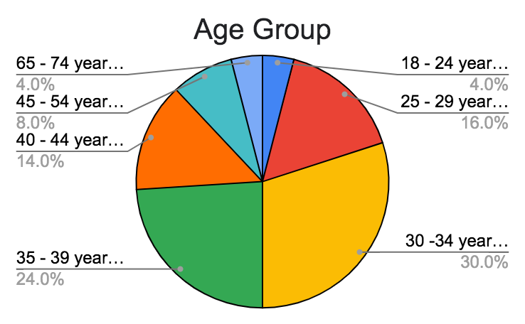
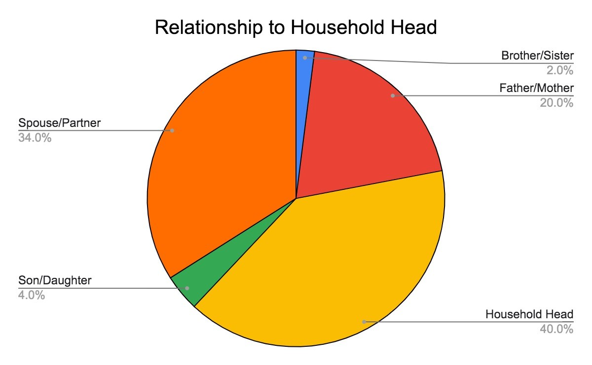
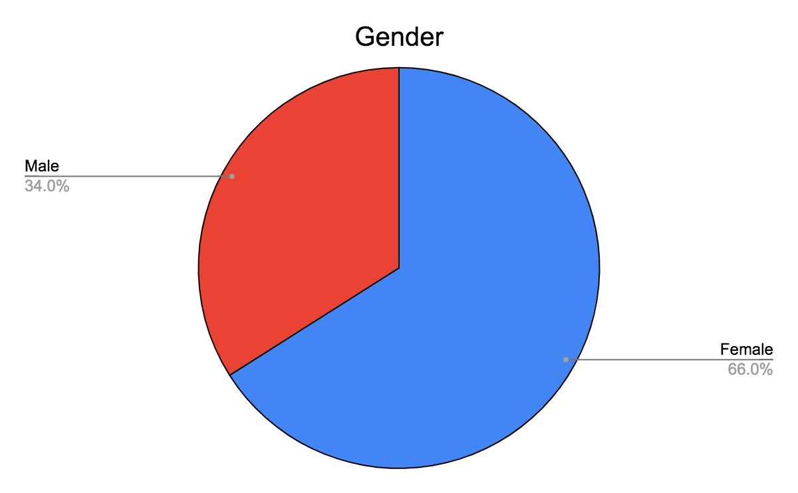
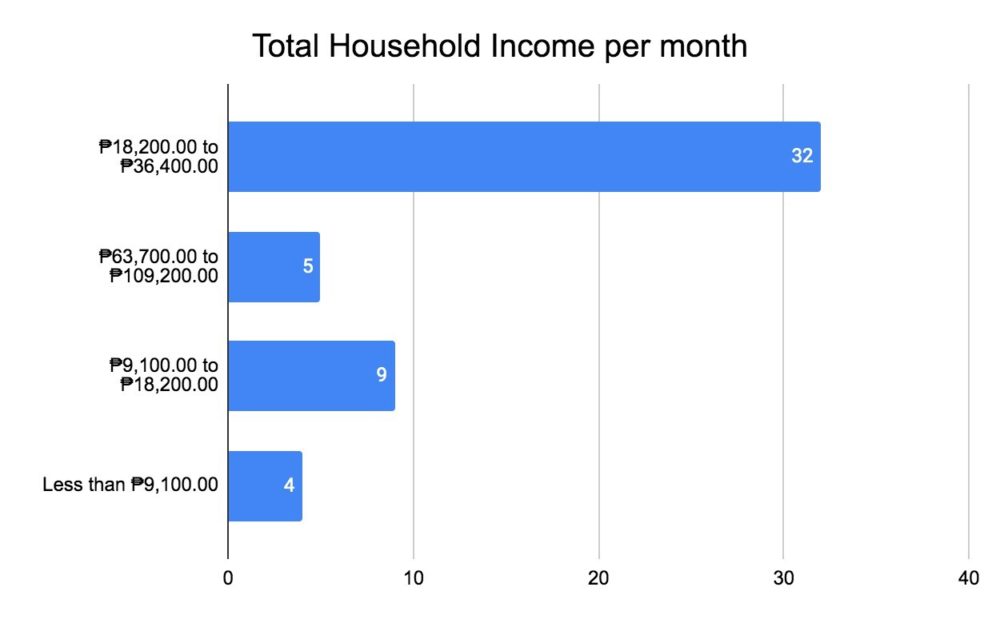
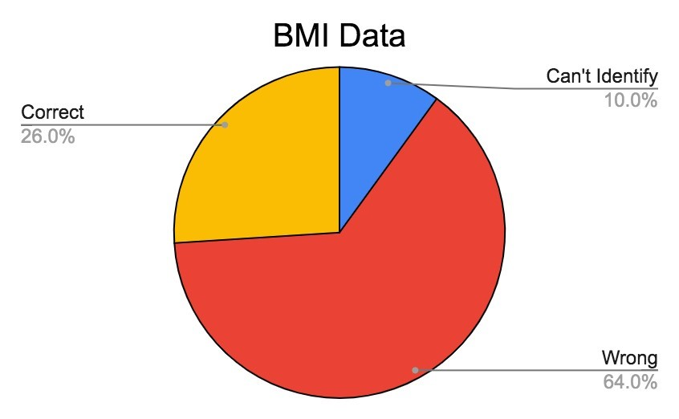
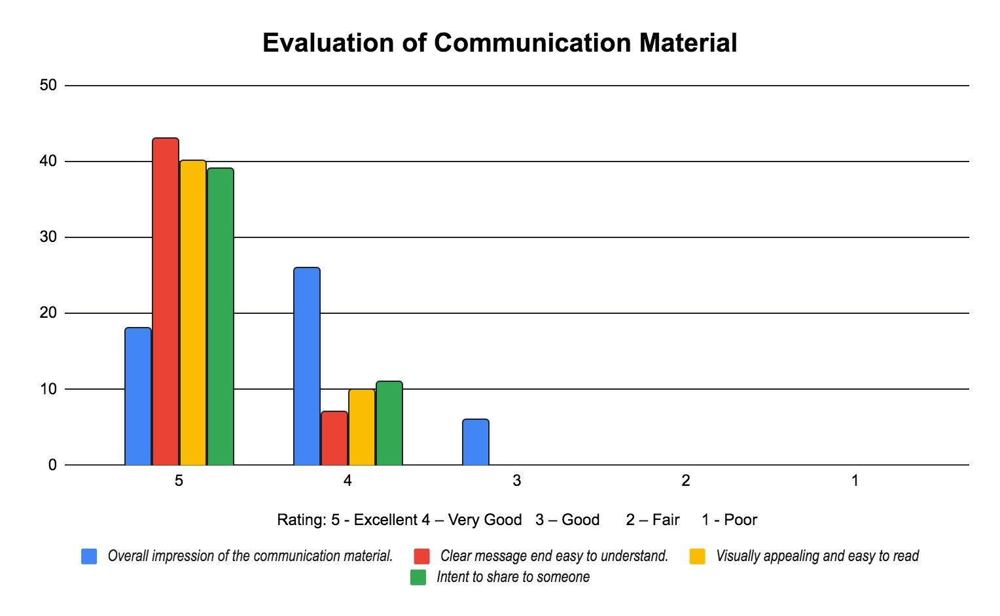

Survey Results
Survey Overview
Demographic Information
Age Distribution of Participants
- Under 30 - 34 years old: 30%
- 35 - 39 years old: 24%
- 25 - 29 years old: 16%
- 40 - 44 years old: 14%
- 45 - 54 years old: 8%
- 18 - 24 years old: 4%
- 65 - 74 years old: 4%

Participant Relationship Status



Anthropometric Data
| Over the past 30 days, on average, how many hours per day did your child sit and watch TV, videos, or play on a screen device (ex., phone, television, tablet, computer, or laptop)? | |
|---|---|
| Total Hours | f |
| 1 hour | 7 |
| 2 hours | 5 |
| 3 hours | 8 |
| 4 hours | 1 |
| 5 hours or more | 29 |
| Grand Total | 50 |
Children Age and Gender
| Gender | Age Group | Grand Total | ||
|---|---|---|---|---|
| 10-12 | 2-5 | 6-9 | ||
| Female | 2 | 9 | 15 | 26 |
| Male | 10 | 13 | 1 | 24 |
| Grand Total | 12 | 22 | 16 | 50 |
Perception of Children's BMI

Nutrition Knowledge Questionnaire
| Question | Yes | No |
|---|---|---|
| Do you understand the importance of balanced nutrition in the growth and development of children? | 50 | 0 |
| Do you know the recommended daily servings of fruits and vegetables for children? | 15 | 35 |
| Do you know the recommended daily intake of protein, carbohydrates, and fats for children? | 21 | 29 |
| Do you see the role of vitamins and minerals in a child's diet? | 50 | 0 |
| Do you know the signs of malnutrition in children and how to prevent it? | 41 | 9 |
| Score | Total | Remarks |
|---|---|---|
| 0 - 6 | 37 | Low |
| 7 - 12 | 13 | Medium |
| 13 - 18 | 0 | High |
| Question | Yes | No |
|---|---|---|
| Do you feel confident in your knowledge of nutrition for children, or would you benefit from additional education or resources? | 36 | 14 |
| According to Harvard University, a planetary health diet is characterized by a variety of high-quality plant-based foods and low amounts of animal-based foods, refined grains, added sugars, and unhealthy fats and encourages food waste reduction. Do you know about planetary health diet? | 16 | 34 |
| Do you have a tool for teaching your children about health and wellness? | 6 | 44 |
| If there is an available app for health awareness, are you going to use it? | 50 | 0 |
Pre-test for the Communication Material
